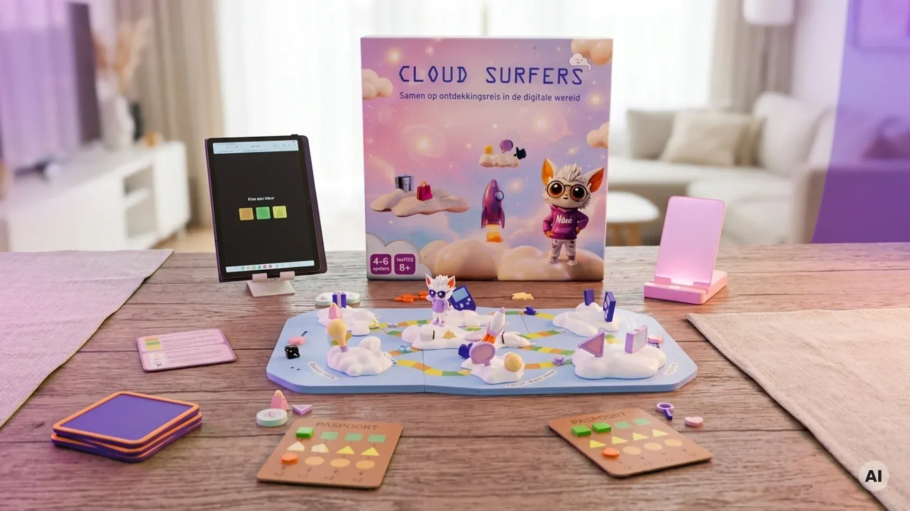
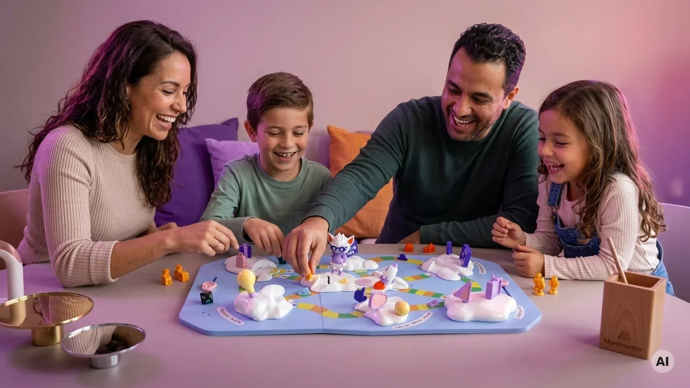

Cloud Surfers: Breng de digitale wereld naar de keukentafel
Het bordspel dat schermtijd bespreekbaar en leuk maakt. Geen strijd of controle, maar samen ontdekken, lachen en afspraken maken aan tafel.

Waarom Cloud Surfers
Van schermtijd naar een gezinsmoment
Geen strenge regels of belerende vingers, maar samen spelen en ontdekken.
100% echte content van jouw gezin
Geen fictieve kaartjes of standaard vragen. Het spel draait om de actuele digitale belevingswereld van je kind en jullie gezin.
Groeit mee met je kind
Omdat de digitale interesses van je kind steeds veranderen, verandert het spel automatisch mee. Het blijft boeiend van 4 tot 12 jaar.
Spelverloop
Zo speel je Cloud Surfers
Screenshots maken
Je kind verzamelt speelse screenshots via opdrachten in de app, zoals 'Je favoriete app van de week' of 'Wat maakte je aan het lachen?'.
Spelen aan tafel
Aan de keukentafel vormen de beelden het bordspel. Met opdrachten en draaischijven ontrafelen jullie elkaars online wereld.
Grappige gesprekken
Geen kille ondervraging, maar hilarische taken en verrassende vragen. Je leert wat je kind écht bezighoudt online.
De koelkast-herinnering
Aan het eind vul je samen een reflectie-briefkaart in. Een vrolijke herinnering aan de gemaakte afspraken voor op de koelkast.

Het ontstaan
Onderzoek TU Delft & handgemaakt prototype
Om de brug te slaan tussen app en keukentafel, deed TU Delft-onderzoekster Klaske afstudeeronderzoek voor Monimentor. De fysieke prototypes zijn lokaal gebouwd in de werkplaats van oprichter Maarten Nijhuis en getest met echte gezinnen.
Wil je als eerste meespelen?
De eerste tests met het prototype waren een groot succes. We bereiden nu serieproductie voor. Schrijf je in voor de wachtlijst en ontvang als eerste updates!